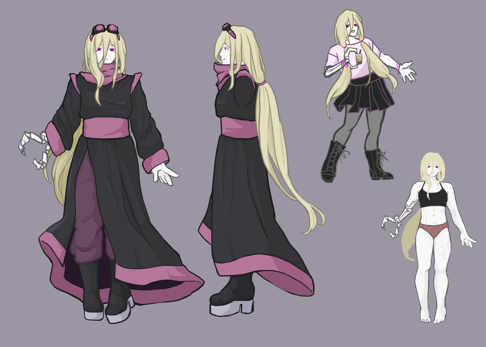

character study
I made this character reference/study of my original character, a mad scientist-type character. Mostly a static reference, I worked to show her outfit and body details. Her right hand is bionic, but the rest of her body is not entirely organic either. The markings on her body are not always visible, but cover most of the surface.
Her outfits remain relatively simple, consisting of solid colors. For her base outfit, she wears a robe over loose pants, with platform boots and goggles. Her long hair is loosely tied back, but is probably not to precise safety protocols (not like she cares too much). The top corner shows an example of a casual outfit. She is a relatively carefree person, and is mostly quite kind. While she is generally chill, she is enthusiastic about her interests, perhaps there is still a "mad" side to her.
Adobe Photoshop; January 2022